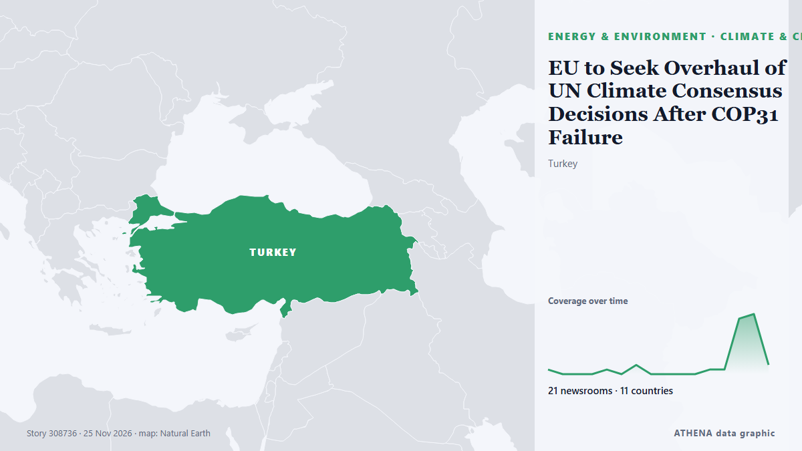

EU to Seek Overhaul of UN Climate Consensus Decisions After COP31 Failure

The European Union will propose to the UN to review the consensus decision-making model of the COP climate conferences after the latest summit ended without a deal but with a lot of quarrels about… από OilPrice.com
Τι άλλαξε 13 νέες αναφορές από 11 μέσα τις τελευταίες 24 ώρες.
Δείτε τις πηγές ›Τεκμήριωση: Επαρκής
Αναφέρθηκε ανεξάρτητα από 21 μέσα σε 11 χώρες από τις 10 Νοε, πρώτο το Pacific Islands Forum· η κάλυψη εξασθενεί. Το ATHENA εκτιμά τον κίνδυνο μέτριο (2.8/10), κυρίως λόγω της σοβαρότητάς του και της εμβέλειάς του. Βεβαιότητα 89% (υψηλή): το επιβεβαιώνουν 21 ανεξάρτητα μέσα, μέση αξιοπιστία 70%. Μέσα ανά χώρα: Ηνωμένο Βασίλειο (11), Ινδία (4), Ηνωμένες Πολιτείες (4). Κάλυψη: 10 Νοε έως 25 Νοε, 365 ώρες.
Γιατί έχει σημασία: Οι εξελίξεις στην ενέργεια και τους πόρους επηρεάζουν τις τιμές καυσίμων και ρεύματος, την ασφάλεια εφοδιασμού και τους κλιματικούς στόχους.
Τι άλλαξε: 13 νέες αναφορές από 11 μέσα στο 24ωρο έως 25 Νοε.
Πρώτη διατύπωση: Ethiopia: COP31 Ends in Deadlock, Leaving Ethiopia to Pick Up the Pieces
ΑυτοματοποιημένοΕπιλέχθηκε, ομαδοποιήθηκε και βαθμολογήθηκε με τη δημοσιευμένη μέθοδο της ATHENA από 23 ανεξάρτητα μέσα. Ο τίτλος είναι του μέσου· οι προτάσεις της ATHENA ακολουθούν σταθερά πρότυπα - δεν τις γράφει παραγωγική ΤΝ. Πώς λειτουργεί →
Πώς να διαβάσετε αυτή τη σελίδα
- Τι διαβάζετε
- 21 μέσα σε 11 χώρες ανέφεραν αυτό το γεγονός. Οι αναφορές παρακάτω εμφανίζονται με τη σειρά που δημοσιεύτηκαν· κάθε τίτλος ανοίγει το αρχικό άρθρο. Το ATHENA δεν γράφει δικά του ρεπορτάζ.
- Η εκτίμησή μας
- Για την καταγραφή — Οι αναφορές περιγράφουν ένα ολοκληρωμένο, εσωτερικό, εμπορικό ή προσωπικό ζήτημα. Το καταγράφουμε ώστε να βλέπετε ποιος το ανέφερε και πότε. Δεν παρακολουθούμε εδώ κίνδυνο ευρύτερης σύγκρουσης.
- Πόσα στοιχεία υπάρχουν
- Επαρκής Αρκετά ανεξάρτητα μέσα συμφωνούν, αλλά η εικόνα μπορεί ακόμη να αλλάξει.
Αφού αφαιρεθούν οι επαναλήψεις, τα άσχετα και τα παλιά στοιχεία, υπολογίζονται 19 από τις 32 αναφορές που παρατίθενται· το 75% των τίτλων αντιστοιχεί στο γεγονός.
- Τι δεν σημαίνει
- Το ATHENA μετρά πώς καλύπτεται ένα γεγονός, όχι αν είναι αληθές. Δεν είναι πρόβλεψη, κρίση για το ποιος έχει δίκιο ή συμβουλή.
- Τι θα την άλλαζε
- Αναφορές από άλλα ανεξάρτητα μέσα που δείχνουν διαφορετική εξέλιξη, ή σαφής επιβεβαίωση ή διάψευση από επίσημη πηγή.
Εκτίμηση R2 · ανανεώνεται με κάθε ενημέρωση της σελίδας. Το ATHENA δεν έχει δημοσιεύσει ακόμη ιστορικό επιδόσεων για αυτές τις εκτιμήσεις· όταν το κάνει, θα συνδέεται εδώ.
Με μια ματιά
Επιλέγεται, βαθμολογείται και γράφεται από τη δημοσιευμένη μεθοδολογία του ATHENA. Κανένας συντάκτης δεν παρεμβαίνει σε μεμονωμένα γεγονότα. Πώς παράγεται ›
| 10 Nov 05:55 UTC | 1 |
|---|---|
| 11 Nov 05:55 UTC | 0 |
| 12 Nov 05:55 UTC | 0 |
| 13 Nov 05:55 UTC | 0 |
| 14 Nov 05:55 UTC | 1 |
| 15 Nov 05:55 UTC | 0 |
| 16 Nov 05:55 UTC | 2 |
| 17 Nov 05:55 UTC | 0 |
| 18 Nov 05:55 UTC | 0 |
| 19 Nov 05:55 UTC | 0 |
| 20 Nov 05:55 UTC | 0 |
| 21 Nov 05:55 UTC | 1 |
| 22 Nov 05:55 UTC | 1 |
| 23 Nov 05:55 UTC | 12 |
| 24 Nov 05:55 UTC | 13 |
| 25 Nov 05:55 UTC | 2 |
Γιατί αυτοί οι αριθμοί
Σημασία
Πόσο πολύ και πόσο εμφανώς αναφέρεται η είδηση.
Κίνδυνος
Τι περιγράφουν οι αναφορές, βαθμολογημένο για πιθανή ζημιά. Δεν είναι πρόβλεψη.
Βεβαιότητα
Πόσο καλά την στηρίζουν οι ανεξάρτητες πηγές.
Η κάλυψη — ποιος το ανέφερε και πότε
ο τίτλος όπως δημοσιεύτηκε · ανοίγει το πρωτότυπο- Pacific Islands Forum · INTRELEASE: Pacific Urges the World to Turn Climate Commitments into Action
- Pacific Islands Forum · INTRELEASE: Pacific Political Champions Call For Less Talk and More Action at COP 31
- Mongabay India · ΙνδίαClimate movement takes its fight beyond emissions at Türkiye summit
- Mongabay India · ΙνδίαTürkiye climate summit’s finance gap threatens its promise of action
- The Independent · Ηνωμένο ΒασίλειοHow to defrost a turkey and other Thanksgiving meal advice from a food safety expert
- Daily Maverick · Νότια ΑφρικήCLIMATE SUMMIT: West Coast fishers left waiting for help as COP31 ends without a deal
- interest.co.nz · Νέα ΖηλανδίαWhat happens now? Final results, a reshuffle deadline and coalition talks await
- NPR · Ηνωμένες ΠολιτείεςLet's talk turkey: Here's how Thanksgiving meal costs have changed this year
- AllAfrica · AFREthiopia: COP31 Ends in Deadlock, Leaving Ethiopia to Pick Up the Pieces
- Inside Climate News · Ηνωμένες ΠολιτείεςClimate Hope
- MyJoyOnline · ΓκάναZanetor, the Climate Summit and the Microphone that needed Resuscitation!
- Mongabay India · ΙνδίαFossil fuel divide fractures consensus at climate talks in Antalya
- The Independent · Ηνωμένο ΒασίλειοHere's what's next after climate talks collapse: Reform, individual action, hope and more heat
- Guardian Environment · Ηνωμένο ΒασίλειοRobert Macfarlane says trust in Cop to deliver change on climate is ‘misplaced’
- Post-Courier (PNG) · Παπούα Νέα Γουινέα‘Worst COP ever’: blame game after climate talks fail
- Indian Express · ΙνδίαTo break COP deadlock, bring back climate justice
- Oman Observer · ΟμάνThe UN Climate talks broke down
- Nation.Cymru · Ηνωμένο ΒασίλειοWelsh pupils lead simulated climate crisis talks
- The Guardian · Ηνωμένο ΒασίλειοCampaigners urge Albanese government to reject ‘climate bomb’ coalmine expansion after Cop31
- The San Juan Daily Star · Πουέρτο ΡίκοUN climate talks collapse in a bitter clash over fossil fuels
- Mongabay · Ηνωμένες ΠολιτείεςIndigenous peoples leave collapsed climate talks with promises on hold
- Skift · Ηνωμένες ΠολιτείεςWithout a COP31 Deal, Destinations Have a Weaker Signal for Climate Resilience
- OilPrice.com · Ηνωμένο ΒασίλειοEU to Seek Overhaul of UN Climate Consensus Decisions After COP31 Failure
- Carbon Brief · Ηνωμένο ΒασίλειοCOP31: Key outcomes for food, forests, oceans and nature at the UN climate talks in Antalya
- Guardian Environment · Ηνωμένο ΒασίλειοOceans, fossil fuels and keeping 1.5 alive: the missed opportunities at Cop31
- Daily Maverick · Νότια ΑφρικήBusiness Reflection: Economic view — The climate change summit nobody mourns
- RNZ National · Νέα ΖηλανδίαCOP31 format needs re-think, former NZ climate ambassadors say
- Guardian Environment · Ηνωμένο ΒασίλειοWhy are people captivated by this photo of Australia’s climate change minister scowling at Cop31?
- DigiTimes Asia · ΤαϊβάνTaiwan cuts carbon emissions for fourth straight year despite AI expansion
- AllAfrica · AFRAfrica: COP31 - Is Article 6 Delivering Climate Finance?
- The Scotsman · Ηνωμένο ΒασίλειοThe massive silver lining of the collapse of COP31 climate change talks – Ian Johnston
- Guardian Environment · Ηνωμένο ΒασίλειοBill McKibben: 2027 may be the year Americans turn on fossil fuels – Stateside with Kai and Carter